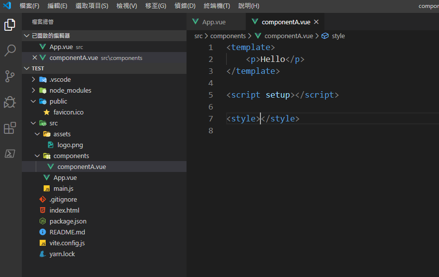
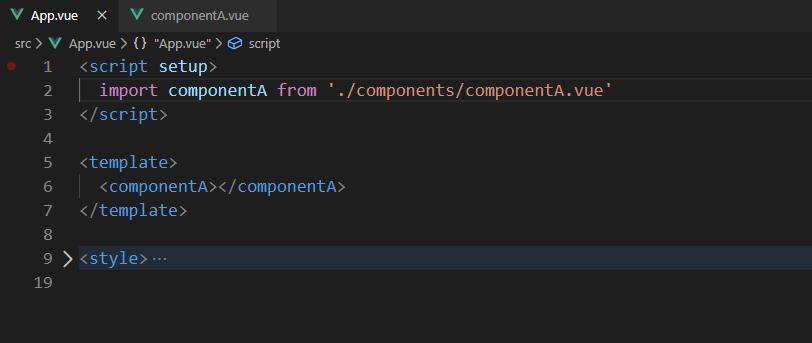
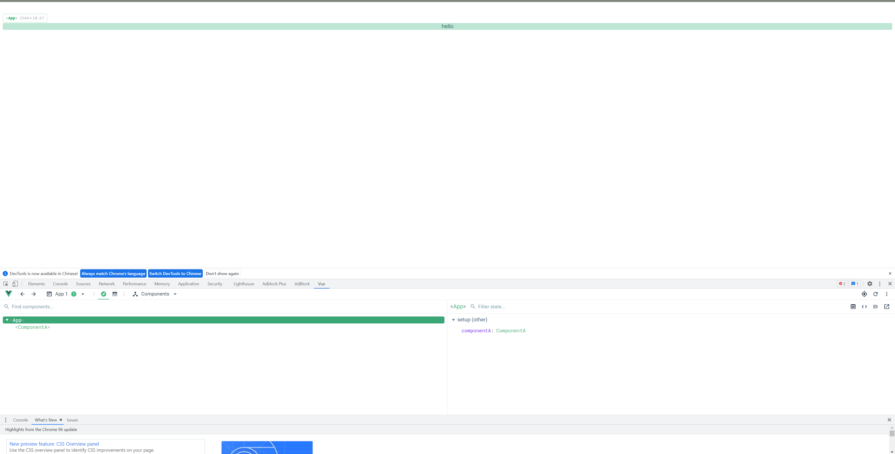
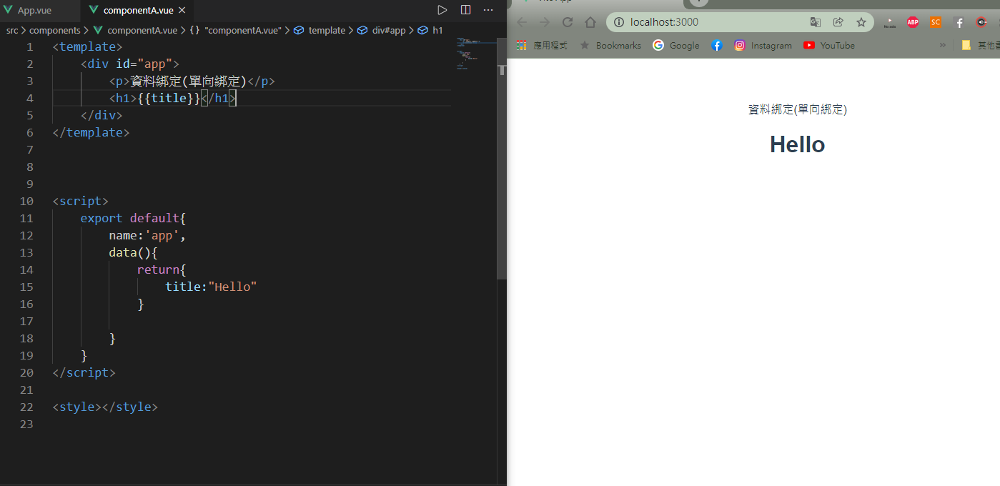
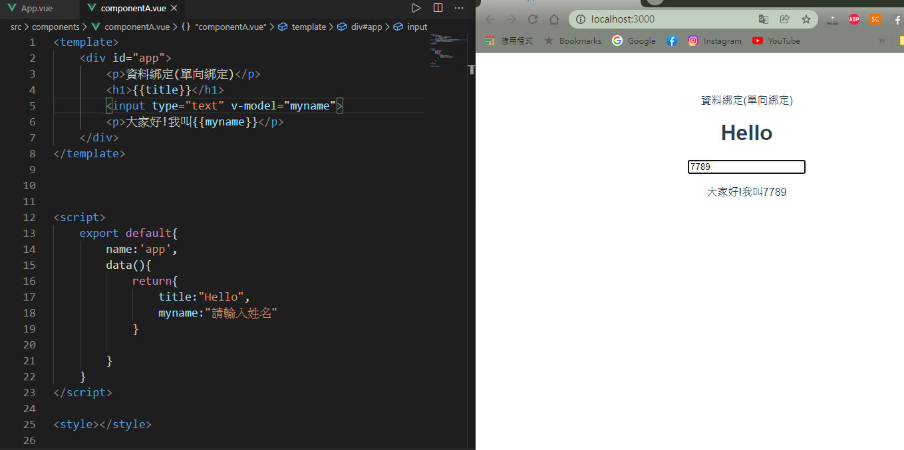
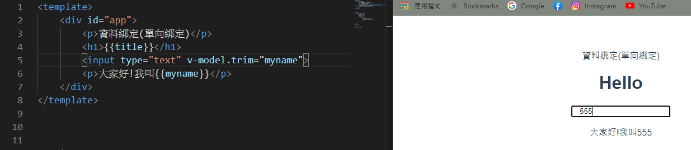
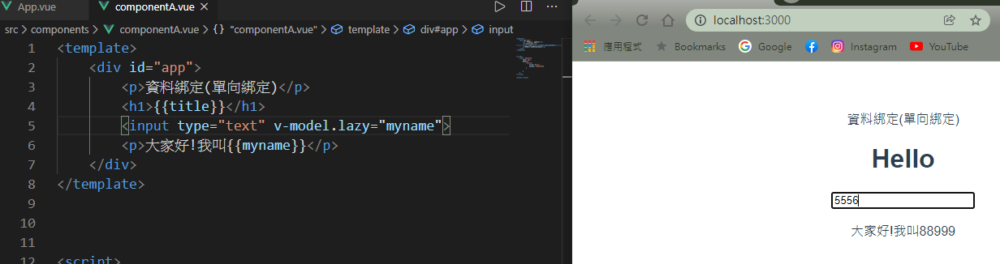
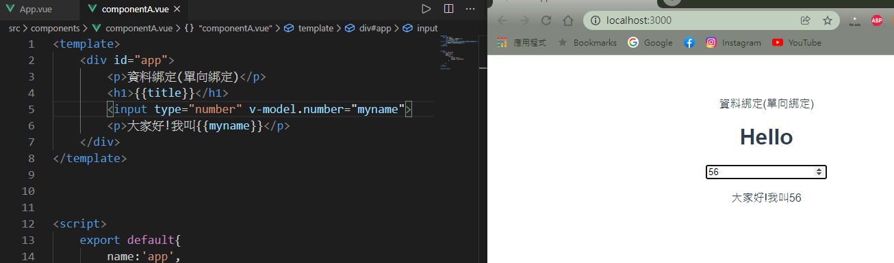

Vue建立組建與基本資料綁定
步驟一
在components資料夾裡新增一個檔案
在App.vue的script標籤匯入
單向資料綁定，回到componentsA.vue裡，在template裡面有個叫模板語法，{{變數}}，我們自己定義，export default是默認導出模塊，這樣就能引用裡面的內容出來使用，name指的是位組賤命名，可不寫，data是我們要放資料的function(函數)，return回傳內容。我們定義了data這個資料，然後綁訂到畫面上
資料驅動畫面
前端框架，像是Vue、React...，核心理念是說不要花太多時間在處理畫面上，而是要我們專心處理資料與事件
v-model
要講到「雙向綁定」就要先說一下v-model，它是Vue.js中的一個屬性，可以對input、textarea、select、checkbox等…這些輸入表單做雙向綁定，運做原理是透過監聽使用者輸入的事件來更新內容！聽起來有點抽象嗎？接下來實際做做看會比較容易了解
雙向綁定，加上input就可以了，後面加上v-model，
.trim
在輸入資料時，難免會有人一開始前面多打了一個空白鍵，或是複製貼上時不小心多選到一個空白符號，這時貼心的.trim就能幫忙我們自動去掉空白！用法很容易，直接在v-model後加入.trim就行了！如下:
.lazy
剛剛有沒有發現，我們在input輸入文字時，它是完全即時同步的，那如果我要等離開input時才更新我輸入的內容呢？一樣在v-model後加入.lazy就行了！如下:
.number
輸入欄位中，很多是限定輸入為「數字」的，比如說「年齡」，如果有人不小心輸入了文字呢？.number這時就好用了！老樣子，在v-model後加入.number，另外將設定為type=number，它會只讓「數字」輸入，如下做法：